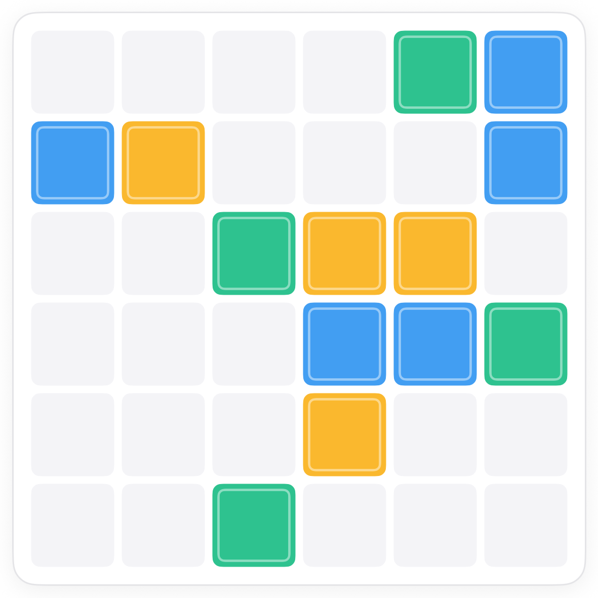
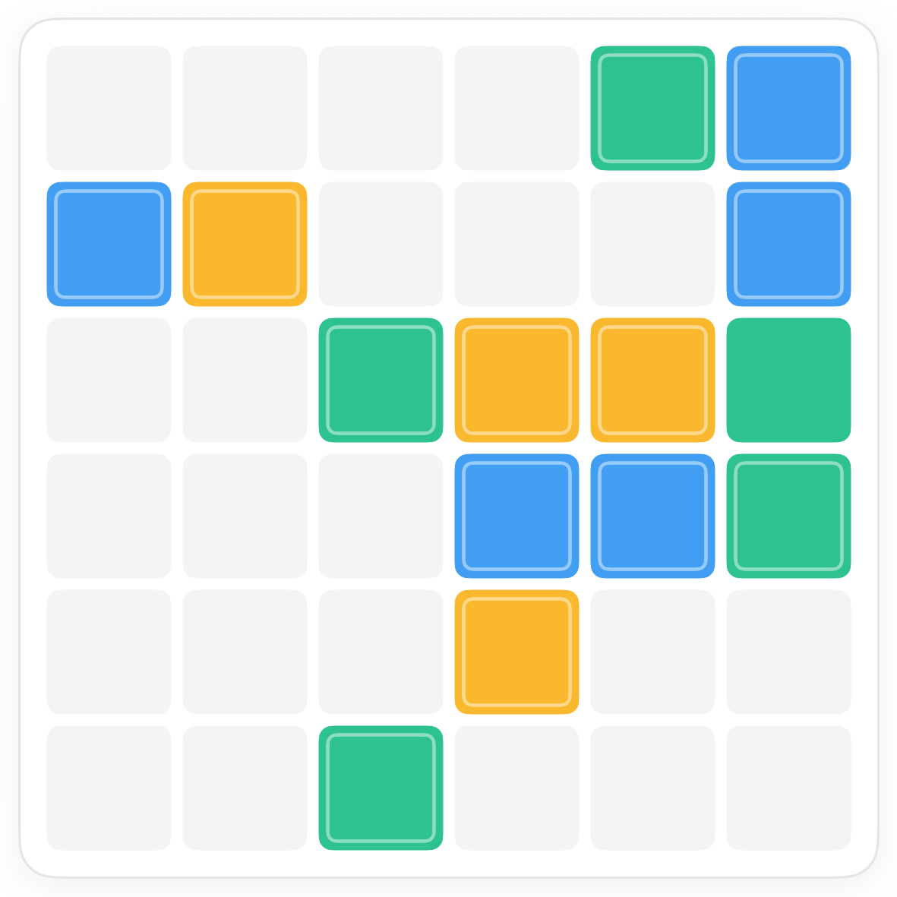
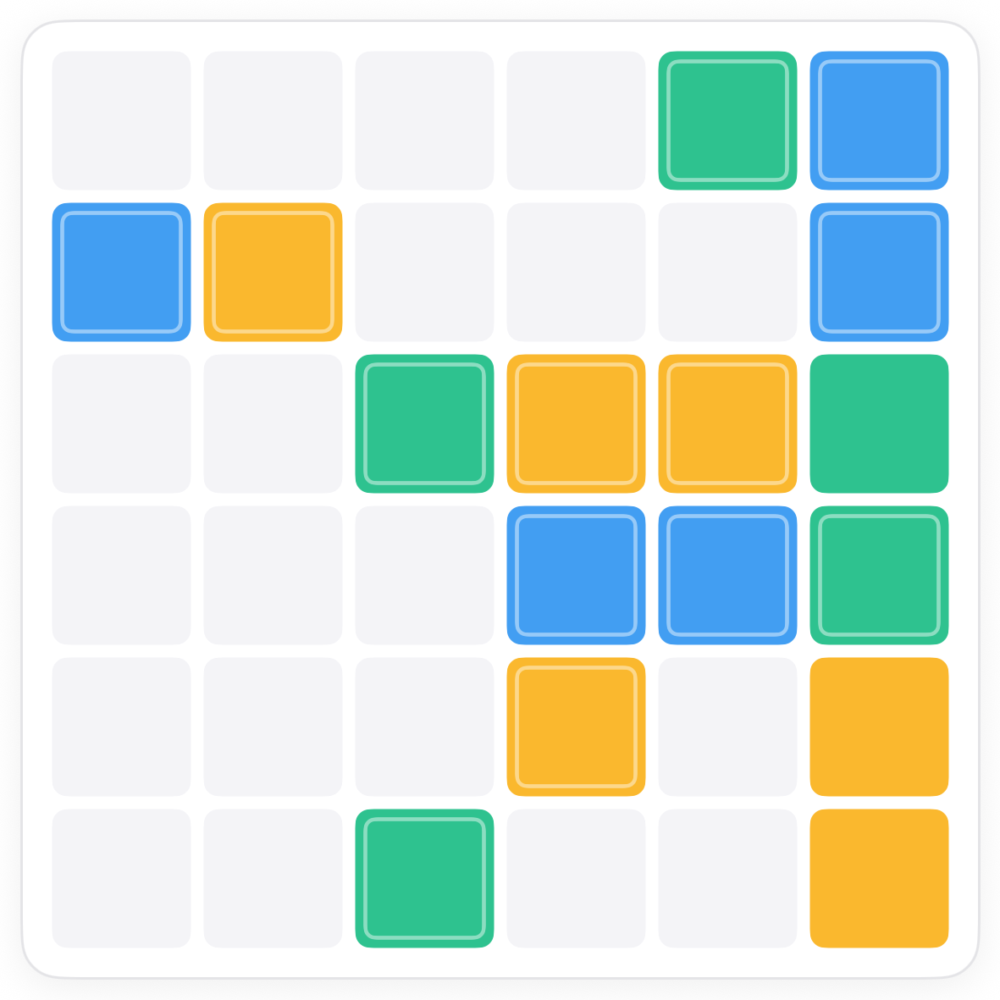
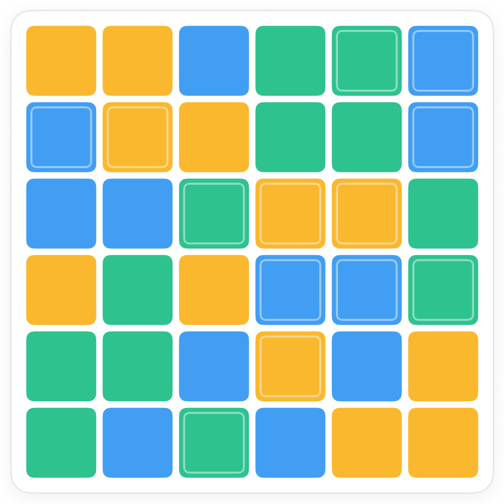

How to play Trio Duets.
Trio is Duets with a third colour. Blue, yellow and mint share every row and column equally, and three of a kind still never sit side by side. One change in how you reason: a pair no longer decides a square on its own.
The board.
A 6 by 6 grid with some squares given in blue, yellow or mint. Tapping a square cycles it through all three colours, then clears it.

The rule.
Same balance as Duets, spread over three colours.
A pair rules a colour out. Two pairs decide.
In Duets, two of a colour side by side forced the squares beside them to be the other colour. With three colours a pair only rules out one of three, so a square usually needs two reasons before it is decided.

Counts finish the line.
Each line needs exactly two of every colour. Once two colours are complete in a line, everything left in it is the third.


Common questions.
Is it still never three in a row?
Yes, for every colour. Two together is fine, three is not.
How does the count change on bigger boards?
A 9 by 9 Trio needs three of each colour per line. The reasoning is identical.